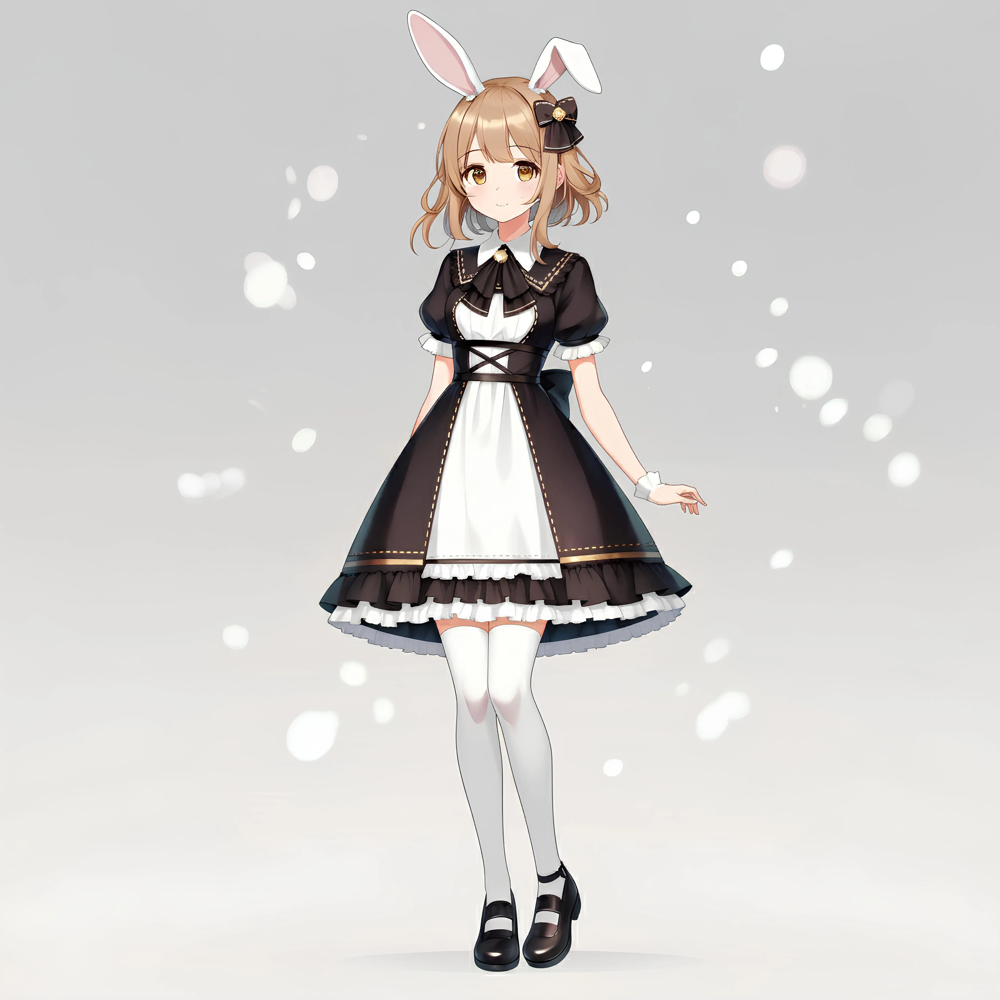

AIで「好き」を仕事に。
福祉の現場に、創造の翼を。
最先端のAIテクノロジーで、一人ひとりの創造性を
開花させるお手伝いをします。
About Me

ご挨拶（音声）
はじめまして。福祉 × AIクリエイターの山本 倫久と申します。
私のミッションは、AIという最先端のテクノロジーを駆使して、福祉の現場に新しい「できる」と「楽しい」を届けることです。
私自身、就労支援B型事業所を利用する中で、誰もが心の中に素晴らしい創造性の種を持っていることを実感してきました。その種を、AIという光と水で育み、一人ひとりの「好き」という気持ちを、自信を持って世に出せる「作品」へと開花させる。そのお手伝いをすることが、私の最大の喜びです。
企画、シナリオ、音楽、イラスト、動画編集まで、コンテンツ制作の全工程をワンストップで手掛けるスキルと、何より「教えること」への情熱があります。複雑なITスキルも、キャラクターの掛け合いなどを通じて、誰もが楽しみながら学べる教材へとデザインし直すことを得意としています。
Skills & Services
AIイラスト制作
Stable Diffusion等を活用したキャラクター・背景制作、および操作指導。
動画・音楽制作
企画、台本(GPTs)、音声(VOICEVOX)、楽曲(Suno)、編集(YMM4)まで一貫対応。
教材コンテンツ設計
複雑なITスキルを、初心者でも楽しく学べるインタラクティブな教材を開発。
Webアプリ開発
HTML/CSS/JSを用いた、体験型学習アプリやツールのプロトタイプ開発。
福祉×ITコンサル
当事者目線で、福祉現場の課題を解決するIT活用の企画・提案。
総合プロデュース
アイデアの壁打ちから完成まで、コンテンツ制作の全工程を伴走支援。
Chromachannelの歩き方
Latest Blog
2025.08.07
【開発秘話】なぜ私は、福祉の現場で「AI博士」を創ったのか？
就労支援の現場で見た「言葉にならない壁」を、テクノロジーでどう乗り越えようとしたのか。その開発背景と、こだわりの安全設計の全てを語ります。

2025.08.07
【時短レシピ】AI献立プロンプトで1週間の夕食の悩みが5分で解決した話
自作プロンプトは本当に使える？AIとのリアルな対話ログ付きで、1週間分の献立が完成するまでを全公開します。
2025.08.05
うさぎの気持ち、わかってる？【うさぎの習性まるわかりガイド】
「足ダン」や「鼻ツン」はなぜ？うさぎの気持ちが手に取るようにわかる代表的な習性を徹底解説します。


Contact
AIと福祉を繋ぐ、新しい挑戦にご興味をお持ちいただけましたら、
ぜひ、以下のメールアドレスまでお気軽にご連絡ください。
クリックしていただけましたら、メール機能が立ち上がる仕様になっております。